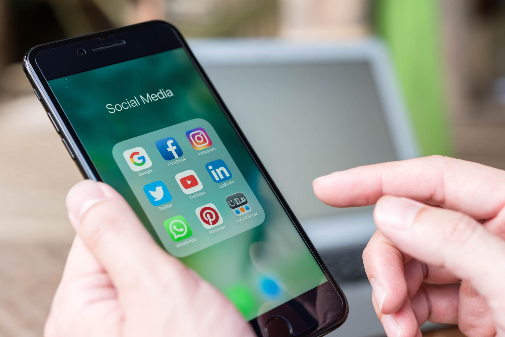
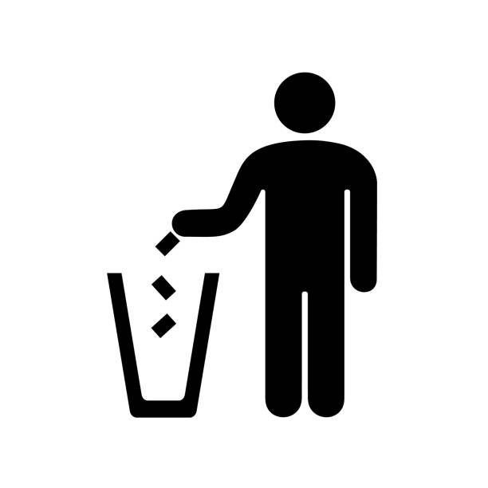
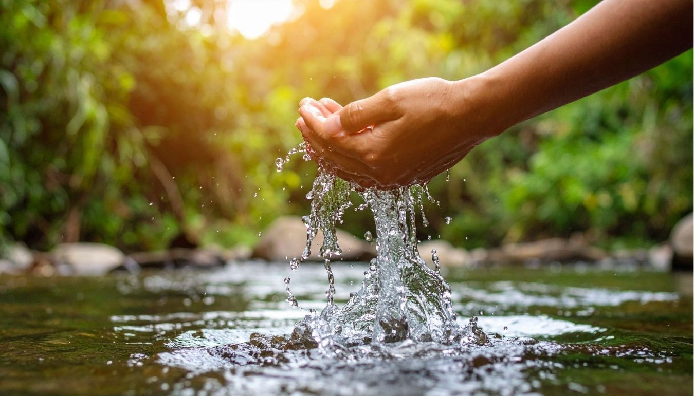
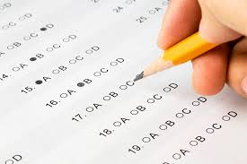
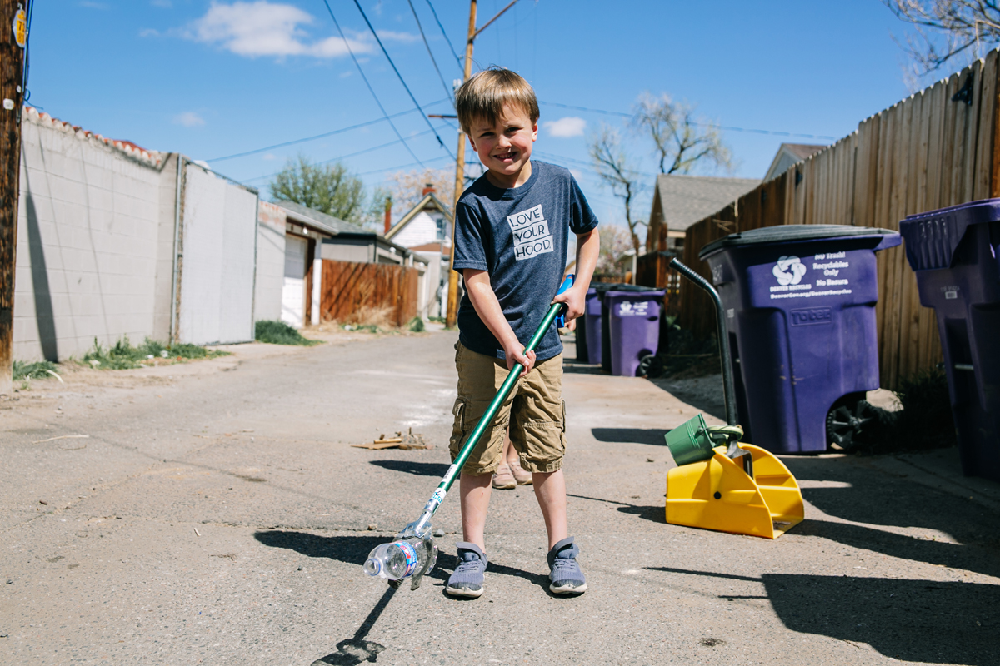
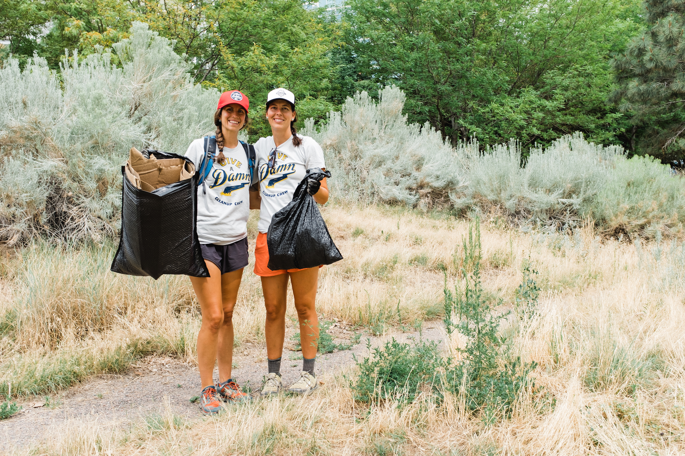
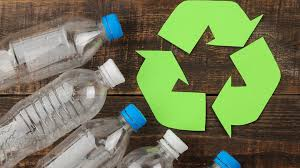
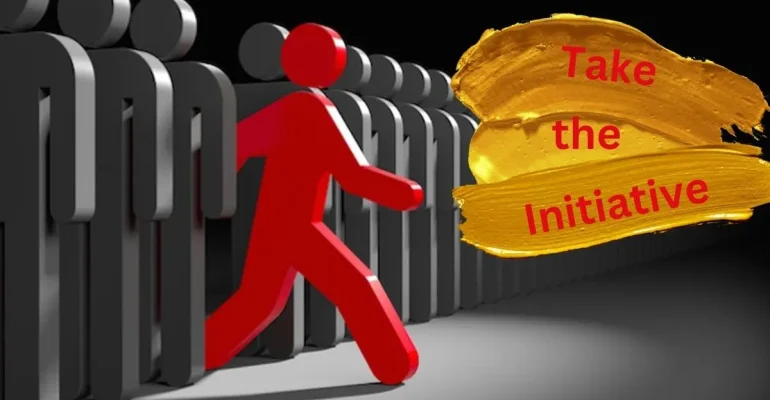
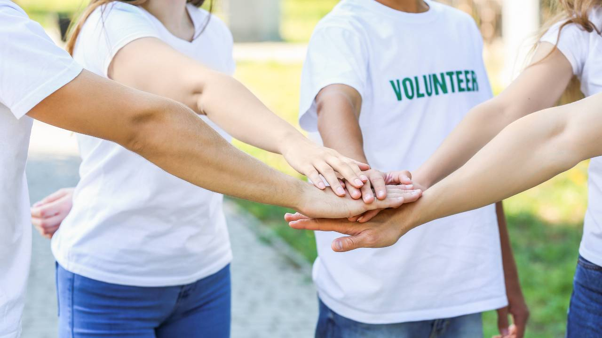

What YOU can do today?
Even small changes can make a difference. Start with simple actions today and grow into a real protector of the Caspian.
Small actions. Real impact.
Start with the easiest steps. They may seem small, but together they create visible change.

Throw trash into bins
A clean street, beach, or neighborhood starts with simple habits. Dispose of waste properly and do not leave garbage near water.

Save water
Use less water when possible. Avoid wasting it in daily routines. Water conservation is part of protecting the future of the region.

Take our test
Answer a few short questions and see how your lifestyle affects the environment and the Caspian Sea.
Advanced everyday action
Ready to do more? These actions help turn awareness into a stronger, visible example for others.

Clean your street and area
Pick up litter in your neighborhood, near local water, or public places. Share your action and tag us to inspire more people.

Tag us and spread action
Show your cleanup efforts online. One post can motivate others to care, join, and repeat the same action.

Read our eco guide
Learn practical ways to reduce pollution: use less water, avoid polluting water bodies, throw away waste properly, and reduce plastic use.

Reduce plastic use
Replace disposable items when possible and make choices that create less waste in everyday life.
Become a real saver
Support direct change with your time, energy, and resources. This is where people become part of the movement.

Your initiative
Your initiative can really help us. Simply by getting your friends involved and stopping littering, you will be helping us a great deal.

Volunteer
Join cleanups, activities, and awareness actions. Help us make the mission visible not only online, but in real life too.

Join the movement
Become one of the people who do not just talk about the problem, but actively help solve it.
What is your Caspian eco profile?
Answer honestly and discover how your daily habits impact the environment.
What WE can do
We turn public concern into organized action for the Caspian Sea.
Our mission is to connect people, science, public awareness, and practical environmental action. We are building a platform that does not just talk about the crisis, but works to respond to it.
Working with scientists
We are ready to collaborate with scientists, researchers, and experts whose work helps explain the environmental condition of the Caspian Sea. Our platform can publish their articles, research, and analysis in a more accessible form so that scientific knowledge reaches a wider public.
We believe research should not remain invisible. It should guide public discussion, shape understanding, and support real environmental action.
Organizing cleanup projects
We plan and support cleanup initiatives focused on coastal and public spaces. These actions are not just symbolic events — they are ways to build visible responsibility, engage volunteers, and create a stronger culture of care around the Caspian.
Through organized projects, we aim to turn concern into participation and participation into sustained environmental habits.
Educational campaigns
We want to create educational campaigns, online meetings, and public discussions that explain the problem clearly: why the Caspian matters, what threatens it, and what ordinary people can do right now.
Public understanding is one of the most important tools in environmental protection.
Collaboration with ministries and institutions
Environmental change needs dialogue with institutions. We aim to build collaborations with ministries, public bodies, and responsible partners to support awareness, education, and long-term environmental initiatives.
Switching to clean energy
The Caspian Sea is shrinking at an alarming rate due to the accelerating effects of global warming. From a physical perspective, rising surface temperatures significantly increase the evaporation mass balance, causing the sea levels to drop. One of the primary drivers of this warming is the carbon emission from burning solid fuels like coal and wood. Switching to electricity, especially from renewable sources, is a critical step in reducing the greenhouse gas emissions that trap heat in our atmosphere. By choosing cleaner energy, we directly mitigate the thermal stress on the Caspian basin. As Caspian Guardians, we advocate for this shift to ensure a sustainable future for our sea and its coastal communities.
Representing public voice
We want to deliver the voice of society to decision-makers. Not every individual has access to institutions, negotiations, or public platforms — but organized civic action can carry those concerns forward.
We speak not only about environmental values, but about public demand for responsibility, attention, and action.
Our approach
From awareness to action. From action to impact.
We do not see environmental work as one campaign or one event. We see it as a long-term movement that combines education, visibility, volunteer action, expert knowledge, partnerships, and public representation.
Our role is to help connect these parts into one strong platform for the protection of the Caspian Sea.